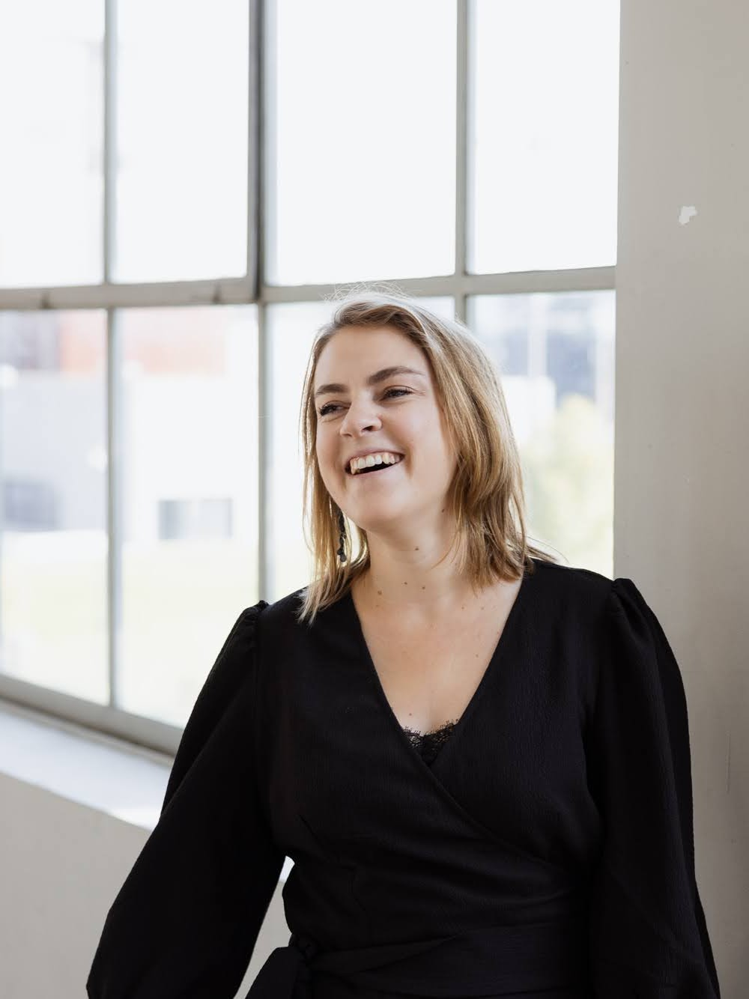

Hallo!
Ik ben Elisa Minten – een creatieve en leergierige professional met een achtergrond in grafisch ontwerp, UX/UI design en front-end development. Vanuit Lummen werk ik aan websites en digitale ervaringen waarin vormgeving, gebruiksvriendelijkheid en toegankelijkheid samenkomen.
Sinds 2020 ben ik actief in de web- en grafische sector. Ik hou ervan om ideeën visueel te vertalen, informatie helder te brengen en na te denken over hoe mensen hun weg vinden in een digitale omgeving. In dit portfolio ontdek je een selectie van mijn werk en projecten.
Meer weten over mijIk hou ervan om ideeën te vertalen naar iets dat mensen raakt, helpt of verder brengt. Of het nu gaat om een website, een ontwerp of een heldere boodschap: ik vind het belangrijk dat vorm en inhoud elkaar versterken en aansluiten bij de mensen voor wie het bedoeld is.

Van websites en digitale ervaringen tot grafisch ontwerp en creatieve ideeën.